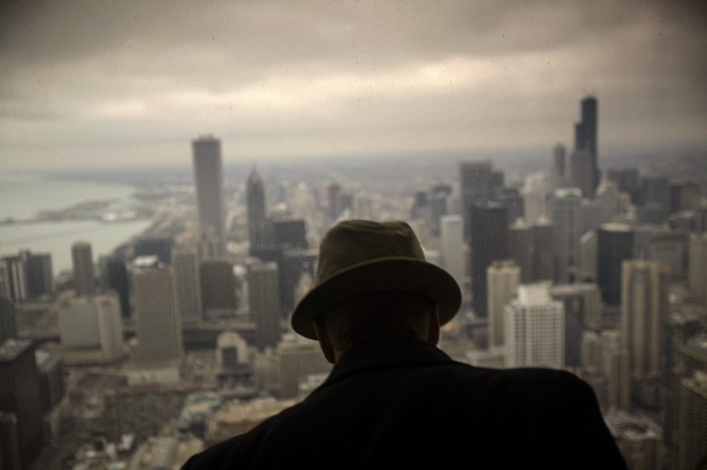

Documentary
that stays.
Artefakt is an independent documentary photography, film, and arts organization — built from inside the practice, not alongside it. We support the long-form work, teach the craft to the next practitioners, preserve the record, and fund ourselves through an ethical materials-reuse operation. Four pillars. One archive. Two cities.



Founded 2026
Founded by Jon Lowenstein — Guggenheim Fellow, National Geographic Explorer, TED Senior Fellow, founding member of NOOR Images. Based in Calgary (Treaty 7 Territory) and Chicago.
Artefakt is an Alberta Society based in Calgary, with ongoing programming in Calgary and Chicago. A separate U.S. nonprofit entity may be established as the organization grows.
Stay in Touch
For inquiries regarding programs, archive access, partnerships, press, or mailing-list updates, contact jon@artefakt.foundation.